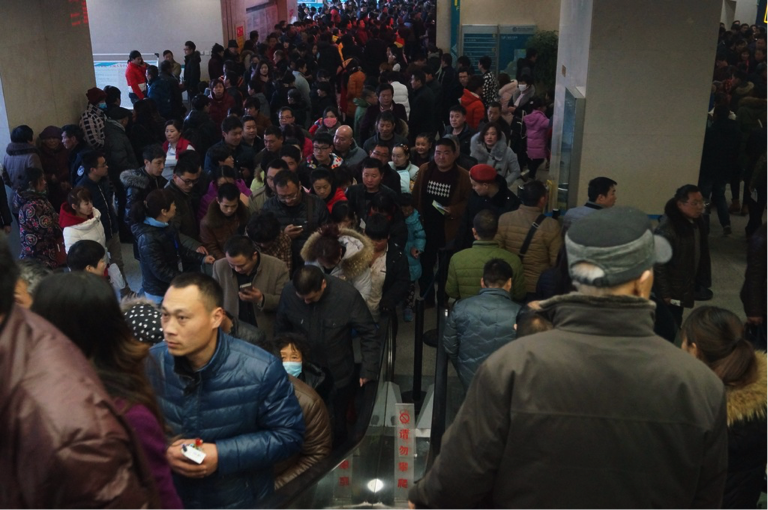
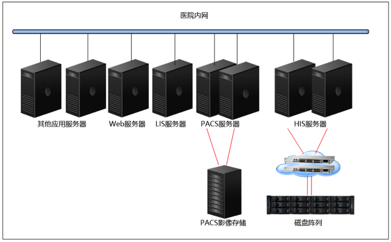
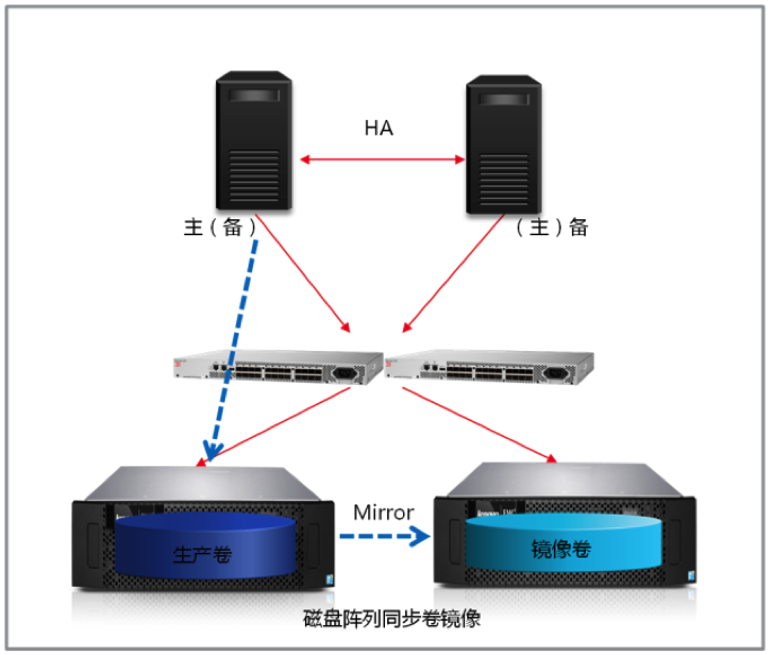
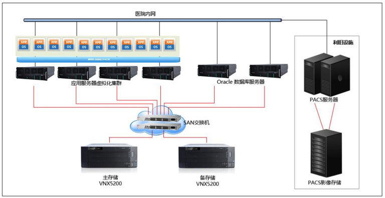

如何打造不排队的医院？
不好意思，这里不是火车站，而是…
医院

近日，患者爆棚的某医院上了头条，300医生看20000+名病人，人山人海的门诊挂号排队场面堪比春运时的车站，这场面是否也让你想起了那些糟糕的就医经历？医院“人满为患”的病真的“无药可医”吗？
“疑难杂症”并发 医院的“康复之路”在何方
以某市妇幼保健院为例，2013年全院门诊病人达创纪录的83万余人次，相当于医院每2分钟就要诊疗3个病人，全年累计完成住院分娩、门诊等手术4.2万余人次。医院的业务规模发展迅速，而IT信息系统建设却没有跟上步伐。在这样的背景下，医院现有的信息化管理系统已然不堪重负，IT基础设施亟需换代升级。
经诊治，该市妇幼保健院面临三大症结：
症结一 医院常年“渐进式”投资模式，造成信息化管理应用系统由一个个“信息孤岛”组成。“信息孤岛”的存在使医院信息系统运行效率低下，不利于资源共享和信息交换，极大影响医院的工作效率。
症结二 医院对信息管理人才的重视不足，大大增加信息系统的管理难度。
症结三 医院HIS、EMR、PACS、LIS等管理运营手段对信息系统可靠性提出了更高的要求。对于妇幼保健院这样规模的专科医院，半小时左右的HIS系统宕机，可能就会使原本井然有序的大厅人满为患，甚至引起纠纷和经济损失。

对症下药联想虚拟化云数据中心助力华丽转身
针对该市妇幼保健院的IT系统现状及需求，联想以集虚拟化、集中存储、容灾等多项功能于一体的医院数据中心解决方案，帮助该市妇幼保健院完成了由传统“孤岛式”数据中心向虚拟化云数据中心的华丽转身：
· 资源利用率更高，应用系统的管理更加统一便捷：实现多项应用系统运行在多个虚拟机上逻辑隔离，同时实现统一界面管理，资源管理效率大幅提高；新应用的部署更加便捷，管理员可随时按需增减虚拟主机的资源配置，应用负载能力更具弹性。
· HIS/EMR等核心业务系统更加稳健：借助联想领先的企业级产品和解决方案，即使在业务繁忙期，核心系统仍可游刃有余。

· 数据中心具备了较强的容灾恢复能力：借助Oracle RAC技术、虚拟机高可用技术以及存储阵列同步镜像技术，医院数据中心可从容应对诸如设备宕机之类的突发状况，将业务中断风险损失降到最低。
· “智慧医疗”、“医疗云”触手可及：联想方案实现了数据的集中存储以及计算资源的虚拟化，为下一步构建“医疗云”，进而实现业务流程再造垫定了基础。
技术+服务 联想品质值得信赖
基于在医疗行业的多年信息化建设经验，联想解决方案带给该市妇幼保健院的，远不止于一个井然有序的医院：
· 整体方案技术成熟、设计完善：联想解决方案以先进的产品和业界领先的VMware vSphere虚拟化技术，将各业务系统的功能性、可靠性、扩展性以及可管理性要求统一起来，交付给用户一套技术成熟、设计完善的整体解决方案。

· 符合医院信息化建设中长期规划：联想解决方案通过逐步升级，实现IT系统到云计算、大数据时代的变革，最终达到帮助医院完成业务流程再造的目标，并且在实施过程中有效保护用户投资。
· 符合用户经济性要求和适当先进性要求：联想解决方案在技术选型中符合卫生部、医院对于医疗信息化改革方向的指导精神，同时兼顾了医院对于信息化建设投资的经济性要求。
“患病”的医院，我知道你不想去。
联想正在努力，用坚实的IT系统“对症下药”，
让更多医院走向“康复”，带给你井然有序的医疗体验。